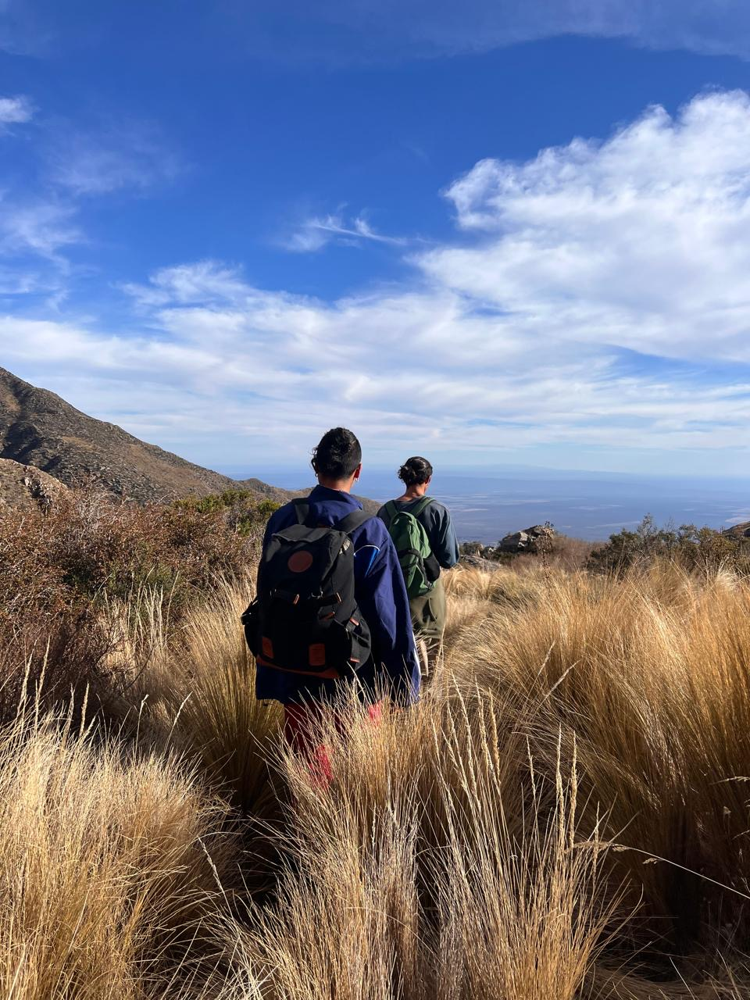
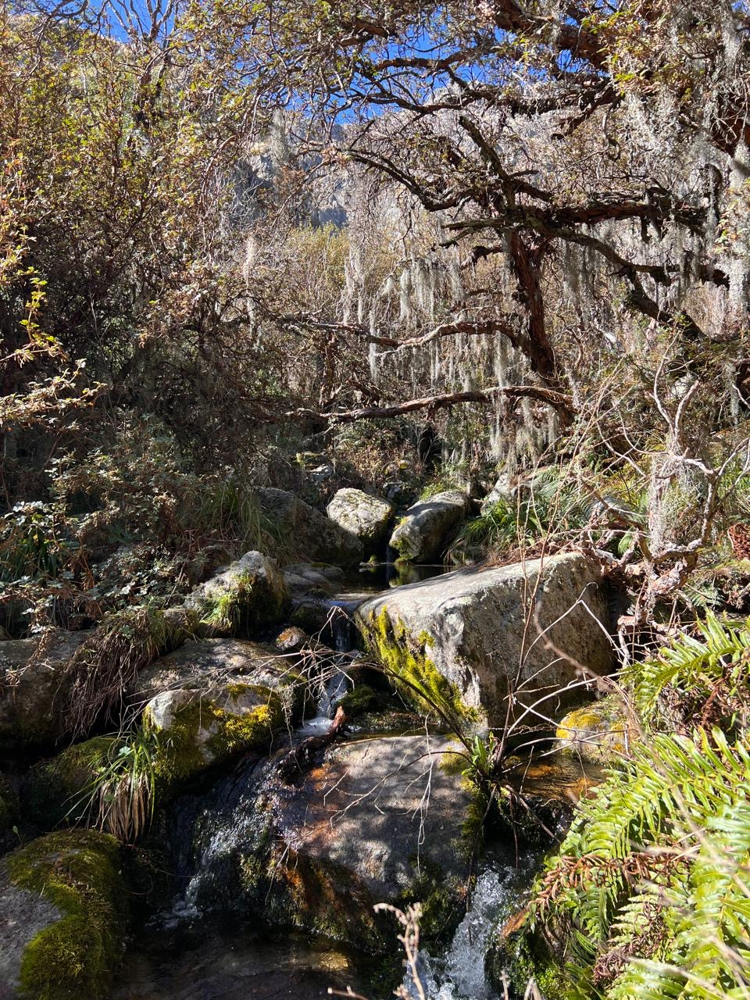
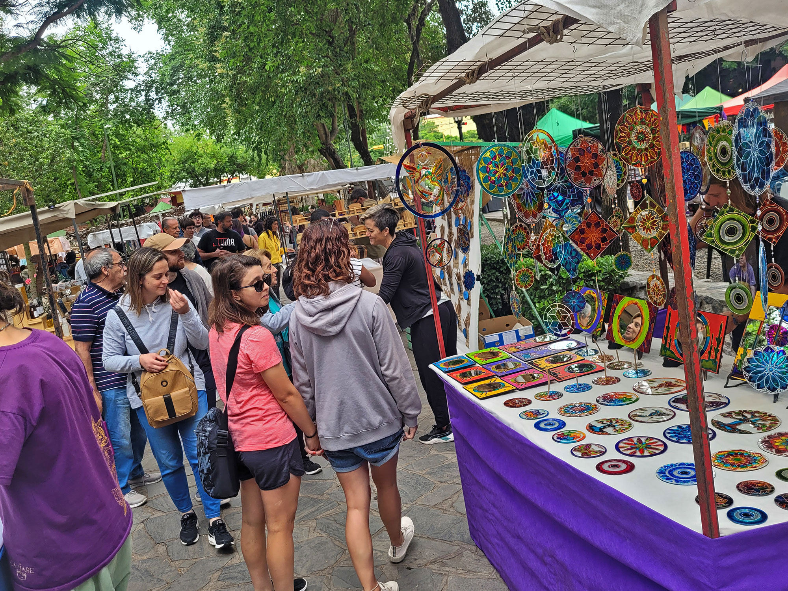
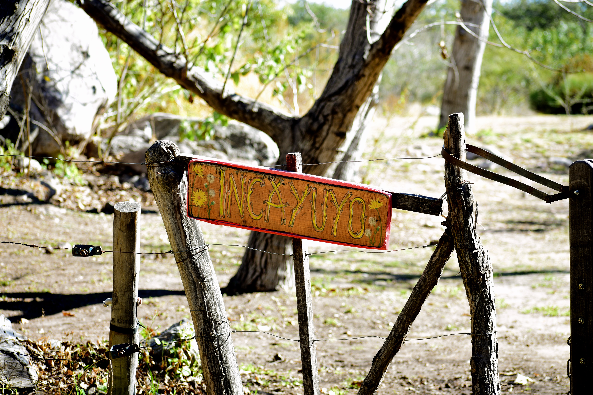

Donde estamos
Nuestra inmejorable ubicación
Nos encontramos en Las Chacras norte a 4 km de Villa de las Rosas y a 15 minutos a pie de la subida al Cerro Champaquí. Estar cerca de los arroyos nos permite adentrarnos rapidamente en senderos de trecking y maravillosos lugares naturales. Disfrutamos de la tranquilidad al pie de las sierras y el confort de la cercanía con el pueblo y todo lo que ofrece.



